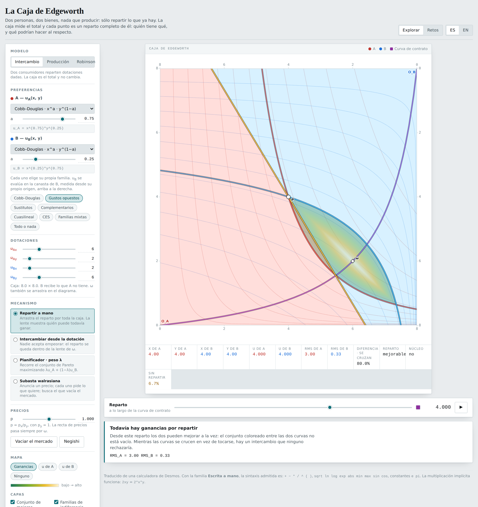
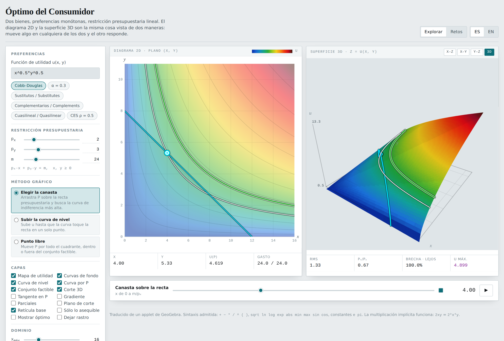
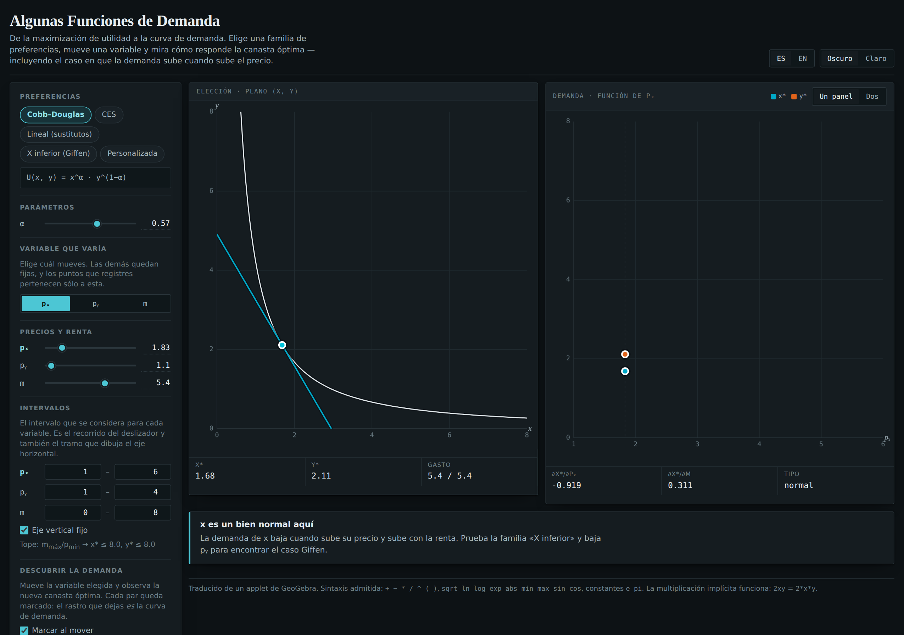
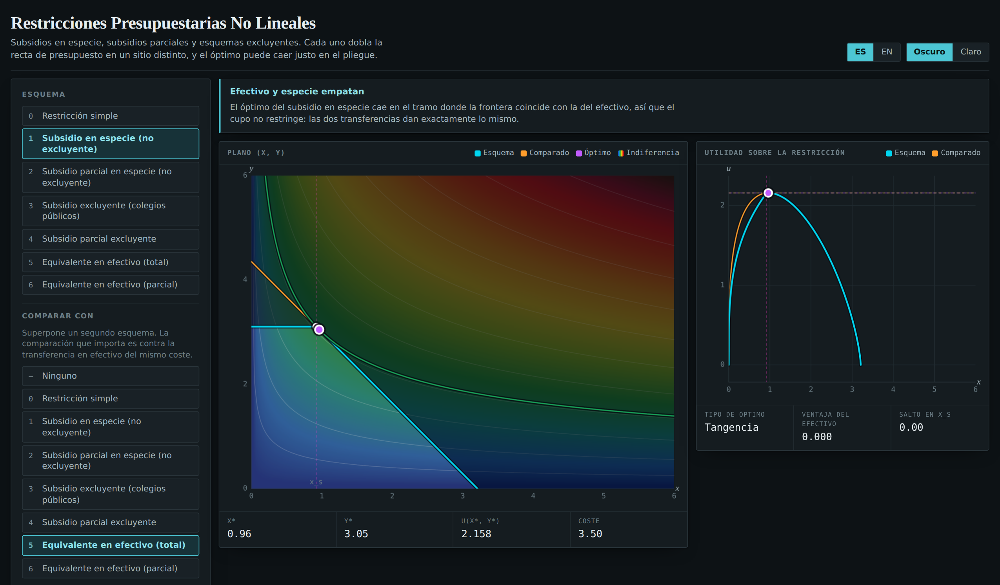
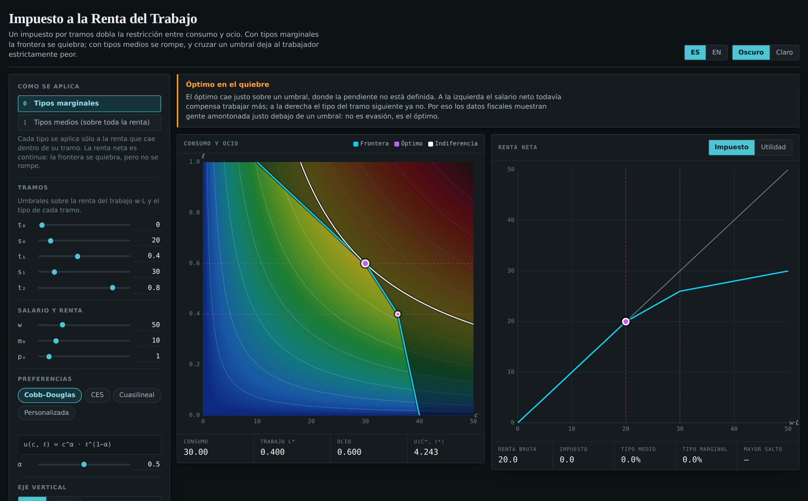

Five interactive diagrams for an intermediate microeconomics course — consumer choice, demand curves, kinked budget sets, income tax, and exchange between two people. Every one runs in a browser, with nothing to install.

Written for someone who has never run one of these before.
Every step is spelled out. Nothing here requires you to write code.
Version 1.0 · Runs on Windows, macOS, Linux, iPad, iPhone and Android · No installation required
Each applet is a single web page. There is no installer, no account, no plug-in and no "loading" from the internet once the page is open. Everything the applet does — every curve, every number — is computed on your own machine, inside the browser, while you watch.
index.html file if you were given a folder.P, the
endowment marked ω, or any slider. Everything redraws instantly.
That is it. It is running.You cannot break it. Nothing you do is saved to a server and nothing is permanent. If a diagram ends up in a state you do not understand, reload the page — F5, or ⌘+R on a Mac — and it returns to its starting position.
| If the question is… | Open |
|---|---|
| Why does the best bundle sit where the curves touch? | Consumer Optimum |
| Where does a demand curve actually come from? | Demand Functions |
| Is a voucher worth as much as the cash it cost? | Non-Linear Budget Constraints |
| How does an income tax change how much people work? | Labour Income Tax |
| What happens when two people trade with each other? | The Edgeworth Box |
Yes, and on a tablet. The layout stacks into one column and drags become finger-drags. A laptop is more comfortable for the two-panel applets, but nothing is missing on a phone.
The five applets were built as a family. Learn these controls once and they mean the same thing in all of them.
ES / EN — top right. Switches the whole interface between Spanish and English at any moment, including mid-demonstration. Nothing is recalculated and nothing is lost.
Dark / Light — top right. Both themes are designed separately, not inverted. Use light for a projector, dark for a lecture hall.
The left rail — every control lives here, grouped under small capitalised headings. The diagram never hides a control behind a menu.
Sliders with a number beside them — drag the slider, or click the number and type an exact value, then press Enter. Typing is the one to use when you want px to be exactly 2.
Layers — a grid of checkboxes near the bottom. Each turns one thing on the diagram on or off. Turning layers off is the most under-used teaching move in these applets: a diagram with one curve on it is a diagram a class can read.
The readout strip — the row of numbers under each diagram. It always describes the current position, and it updates as you drag.
Most applets end with a short paragraph in a box with a coloured left edge. That is not decoration — it is the applet telling you, in words, what the current position means: the curves are tangent, this is efficient but nobody would sign it, the market does not clear. When you are not sure what you are looking at, read that box first.
Pinning the language in a link. Add ?lang=en to
the end of any applet's address and it opens in English regardless of the
reader's settings; ?lang=es does the same for Spanish. Useful when
you are handing one link to a whole class.
Two goods, a budget, and preferences. The applet answers one question — which affordable bundle does this person choose? — and shows the same answer twice, once as the textbook diagram and once as a hill you are looking at from above.

Left panel — the plane (x, y). The textbook picture: the budget line, the indifference curve through the bundle, and a coloured map of utility underneath.
Right panel — the surface z = u(x, y). The same utility drawn as height. The indifference curve on the left is a contour line on the right.
X–Z / X–Y / Y–Z / 3D. Four camera buttons above the right panel. The
first three are flat projections; 3D is a free view you can orbit.
Graphical method. Three radio buttons that change what dragging does — see below.
P along the budget line. Watch the indifference curve through it
swell and shrink.X–Z above the right panel. The budget
line, lifted onto the utility surface, becomes a single arch. The top of that
arch is the same bundle you just found by hand.The move that makes it land. Step 4 is the point of the
second panel. "Find the best affordable bundle" is an abstract instruction;
"find the top of this hill" is not. Students who cannot see the tangency in the
flat diagram very often see it immediately in the X–Z view.
| Method | What dragging does | Use it to show |
|---|---|---|
| Pick the bundle | Slides P along the budget line |
Searching for the highest reachable curve |
| Raise the level curve | Sweeps the indifference curve up and down | That the optimum is where the curve first touches the line |
| Free point | Moves P anywhere in the quadrant |
Bundles that are unaffordable, or affordable but wasteful |
1. Perfect substitutes. Type x+2y as the utility function.
The indifference curves become straight lines. Now change
px slowly: nothing happens to the choice, nothing happens,
nothing happens — and then the bundle jumps from one axis to the other. There is
no tangency anywhere; the optimum is a corner.
2. Perfect complements. Type min(x,y). The curves become
L-shapes and the optimum sits on the kink, where no tangent exists at all. The
applet reports this honestly rather than pretending to find a tangency.
3. The income effect alone. Raise m and leave both prices alone. The budget line slides outward without tilting, and the bundle traces the income expansion path.
The Challenges button in the top bar turns the applet into six scored exercises across the standard preference families. Prices, income and the utility function lock while a challenge is running — otherwise the answer is to retype the question. Checking an answer reveals the true optimum, scores the attempt, and explains which optimality condition applied: a tangency, a kink, or a corner. Progress is remembered in the browser, per device.
Every demand curve in every textbook is the answer to a question nobody shows you being asked. This applet asks it in front of the class: hold preferences fixed, move one price, and record where the optimal bundle lands.

Choose a preference family, choose which variable will vary (px, py or m), then move that variable and record where the bundle goes. The recorded points are the demand curve.
Which variable varies. Three buttons: px, py, m. Switching to m traces an Engel curve instead of a demand curve — same machinery, different question. Switching to py shows a cross-price relationship. Most courses only ever draw the first of the three.
Fixed vertical axis. Leave this on when comparing two families. With it off the axis rescales to whatever curve is showing, and two curves that look identical can be at completely different scales.
Price-consumption curve (PCC). A layer, off by default. It draws the path the bundle takes in the left panel while the price moves — the thing the demand curve on the right is a projection of.
A Giffen good. Choose the fourth preference family — the one written with logarithms and a floor and a ceiling. Set the varying variable to px and sweep.
Over part of the range the demand curve slopes upward: the price of x rises and the household buys more of it. The applet highlights that stretch in its own colour so it cannot be missed.
This is not a bug and not a trick. It is what happens when a good is strongly inferior and takes a large share of the budget: the income effect of the price rise overwhelms the substitution effect. Most students have been told this exists and have never seen one.
1. Cobb–Douglas spends a constant share. Sweep px and watch the demand curve. Then compute px × x at any two recorded points: the same number both times.
2. Substitutes give a step. Choose the linear family. The demand curve is not a curve at all — it is a step: everything, then nothing, at one price.
3. Elasticity by eye. With CES, change the parameter r and sweep again. The demand curve visibly flattens or steepens; that shape is the elasticity of substitution.
Real policies almost never give people cash. They give vouchers, places, discounts and allowances — and each of those bends the budget line somewhere. This applet bends it seven different ways and asks the same question each time.

| # | Scheme | What it does to the frontier |
|---|---|---|
| 0 | Simple constraint | The textbook straight line |
| 1 | In-kind subsidy, non-exclusive | Free up to xs, then the market price — a kink |
| 2 | Partial in-kind, non-exclusive | A discount up to xs, then full price — a shallower kink |
| 3 | Exclusive subsidy (public schools) | Take xs free or buy at the market price — a vertical drop |
| 4 | Partial exclusive | A discount you forfeit entirely if you exceed the limit |
| 5 | Cash equivalent (full) | The same money as cash — a straight line, further out |
| 6 | Cash equivalent (partial) | As above, for the partial subsidy |
Scheme 1 against scheme 5. Set the scheme to 1, then set Compare with to 5. Both cost whoever funds the programme exactly the same. One hands over goods; the other hands over the money those goods would have cost.
Now look at where the two optima sit and what utility each reaches. For most preferences the cash equivalent reaches a higher indifference curve at the same cost — the classic argument that cash beats in-kind. Then find the households for which it makes no difference at all, and say why.
Scheme 2 pairs with 6 the same way.
A subsidy with a negative sign is a tax. Set the subsidy rate s below zero and the scheme becomes a tax at rate τ = −s on the first xs units. The frontier bends the other way. This is the cheapest way to show that a subsidy and a tax are the same instrument with opposite signs.
An income tax with brackets does something to the budget constraint that a flat tax never does. Which something depends entirely on whether the brackets are marginal or average — and the difference is far larger than students expect.

Time is normalised to 1, so L is the fraction of available time worked and ℓ = 1 − L is leisure. Labour income is Y = w·L. Consumption affordable at labour L is
c(L) = ( m₀ + w·L − T(w·L) ) / pₓ
where m₀ is non-labour income and T is the tax. You set three rates and two thresholds, both thresholds on labour income.
Marginal rates. Each rate applies only to the income inside its own bracket. Net income stays continuous, so the frontier kinks — it bends, but it does not break.
Average rates. The bracket you land in sets the rate on all of your income. Net income jumps downward at every threshold. Earning one more unit can leave you strictly poorer. That is a notch, not a kink.
Run this comparison and let the number land. At the starting values — wage 50, other income 10, rates 0 / 0.4 / 0.8, thresholds at 20 and 30 — switch to average rates and look at what happens crossing the first threshold. Net income falls from 19.99 to 12.01.
The worker earned one unit more and ended up almost eight units poorer. The optimum gets pinned just below the threshold, and stays pinned. This is why real tax data shows people bunched immediately below a bracket edge — and why it is evidence of a badly designed schedule, not of evasion.
Two people, two goods, nothing to produce: only what is already there to divide. The box measures the total, and every point in it is a complete answer to "who has what".
B's axes run backwards. A's bundle is read from the bottom left corner, marked O_A, in the ordinary way. B's is read from the top right corner, O_B, with both axes reversed — so B's numbers increase as you move down and to the left.
Both sets of axes are drawn and numbered on the applet, deliberately, because this is the single thing students get wrong. If a number in the readout looks impossible, check which corner it is measured from.
Red curves — A's indifference curves. Blue curves — B's.
The violet curve — the contract curve: every allocation where the two are tangent, and so every allocation that cannot be improved for one without hurting the other.
The shaded region — the improving set: every reallocation that makes both strictly better off. It is empty exactly when the allocation is already efficient, and watching it close is the fastest way to see why.
ω — the endowment: what each of them starts with. Drag it in the diagram, or set it with the four sliders.
P — the current allocation. Drag it anywhere.
| Model | Who is in it | What the diagram shows |
|---|---|---|
| Exchange | Two consumers with fixed endowments | The box, the contract curve, the core |
| Production | Two consumers and a firm | A curved frontier instead of a corner; the rectangle being divided slides along it |
| Robinson | One consumer and a firm | No division to argue about: the optimum is where MRS meets MRT |
The three are one picture. The firm's technology is written
as a frontier, (x/Fx)^c + (y/Fy)^c = 1. At c = 1 it is a
straight line and the opportunity cost is constant; at c = 2 it is the
quarter-ellipse of the textbook; and as c grows it squares off against
the corner — which is the exchange box. Drag c and watch a
production economy turn into an exchange economy.
Choose the mechanism Planner · weight λ. The scrubber now sets a welfare weight, and the allocation moves along the contract curve accordingly: λ near its low end favours B, near its high end favours A.
At the same time the applet computes, for that allocation, the prices that would support it and the transfers each person would need to afford their bundle at those prices. The line under the diagram says it in words — implemented by prices (px, py) = (…, 1) with transfers TA = …, TB = … — and the two transfers always sum to zero. That sentence is the second welfare theorem.
The Negishi button then does the converse: it searches for the weight at which the required transfer is zero. At that weight nobody needs a gift, and the planner's allocation is exactly the competitive equilibrium.
One honest warning about λ. If you give both people identical preferences, the utility possibility frontier is a straight line, and against a straight frontier every efficient allocation is supported by the same weight. λ then cannot pick a point at all: the allocation still moves, but the number sits still. The applet says so rather than hiding it — it marks λ as constant and explains why in the caption.
This is a property of welfare weights, not a fault in the applet. Give the two people different tastes — the default does — and λ works normally.
1. The core shrinks as tastes converge. Make A's and B's preference parameters more alike and watch the highlighted core narrow.
2. Drag the endowment along a price line. Move ω so that its value barely changes, and the equilibrium hardly moves. Move it to a genuinely poorer point and the equilibrium moves a long way. Endowments matter through their value, not their location.
3. Mixed families. Give A Cobb–Douglas and B perfect complements. The contract curve is neither family's textbook picture — which is exactly why the applet lets each person choose independently.
Every applet offers a menu of preference families with sliders for their parameters. Every applet also lets you type a function of your own — choose the family called Typed by hand, or use the text box directly.
| You can write | Meaning |
|---|---|
+ − * / ^ ( ) | The usual arithmetic. ^ is a power. |
sqrt ln log log10 exp abs | Root, natural log, log, base-10 log, exponential, absolute value |
min max | Two arguments: min(x,y) |
sin cos tan | Rarely useful here, but available |
e pi | The two constants |
Implicit multiplication works. 2xy means
2*x*y, and x^(1/3)y^(2/3) parses as you would expect.
Powers bind tighter than a minus sign. -x^2 is
-(x^2), as in every textbook.
Negative exponents need brackets. Write x^(-1), not
x^-1. Both are accepted, but the first is unambiguous to a reader.
| Preferences | Type this |
|---|---|
| Cobb–Douglas, equal weights | x^0.5*y^0.5 |
| Cobb–Douglas, favouring x | x^0.7*y^0.3 |
| Perfect substitutes | x+2y |
| Perfect complements | min(x,y) |
| Leontief in fixed proportions | min(x/1,y/2) |
| Quasilinear | 2sqrt(x)+y |
| Quasilinear, logarithmic | ln(x)+y |
| CES | (0.5x^0.5+0.5y^0.5)^(2) |
If the box turns red. The applet could not read what you
typed and tells you why underneath. The three usual causes: a missing closing
bracket; a letter other than x or y used as a variable;
or a function name spelled differently (sqr instead of
sqrt). Nothing breaks — the diagram simply keeps the last function
it understood until you fix the text.
Each applet is one self-contained HTML file. No database, no PHP, no build step. A web server only has to hand the file over. That is why publishing them is a file-copying job and not a deployment.
public_html. That folder
is your website: whatever sits in it is what visitors see.applets appears.yoursite.com/applets/ — with the trailing
slash. You should see the list of applets.Use a subfolder. Putting everything under
/applets/ means your existing website is untouched: nothing
overwrites your homepage. Back up public_html before doing anything
more adventurous than this.
The one mistake everybody makes. If you end up with
applets/applets/index.html — a folder inside a folder of the same
name — the archive was extracted one level too deep. Open the inner folder,
select everything, move it up one level, and delete the empty folder.
Website builders generally do not allow uploading HTML files at all. That is a limit of the product, not a setting you have missed. The usual way round it is to host the applets somewhere that does allow it — a free static host is enough, since these files need no server features — and then link to them from a menu item on your builder site.
public_html/applets/ and the folder of the applet you are
replacing.index.html and let it overwrite the old one.| What you see | What it means | What to do |
|---|---|---|
| The diagram is blank or partly empty | The utility function is undefined over part of the box — ln(x)
has no value at x = 0, and sqrt none below it. |
Nothing. That emptiness is honest. Move the domain, or use a function defined there. |
An MRS reads ∞ |
The indifference curve is vertical at that point — one marginal utility is zero. | Normal at an edge of the diagram. Move away from the axis. |
| A curve looks jagged | Every curve is traced numerically on a sampling grid. | Nothing to fix; the numbers in the readout are computed to far higher precision than the drawing. |
| Dragging feels heavy | Changing a preference parameter rebuilds everything — both utility fields and every derived curve. | Normal on a slow machine. Turn off the layers you are not using. |
| The text is in the wrong language | The applet follows the link it was opened with. | Use the ES / EN buttons, or add ?lang=en to the address. |
| Challenge progress vanished | Progress is stored per browser, per device — and private windows discard it on close. | Expected. Nothing is stored on any server. |
The universal fix. Reload the page. Every applet starts from a known good state, nothing you did was saved anywhere, and no work is lost because there is no work to lose.